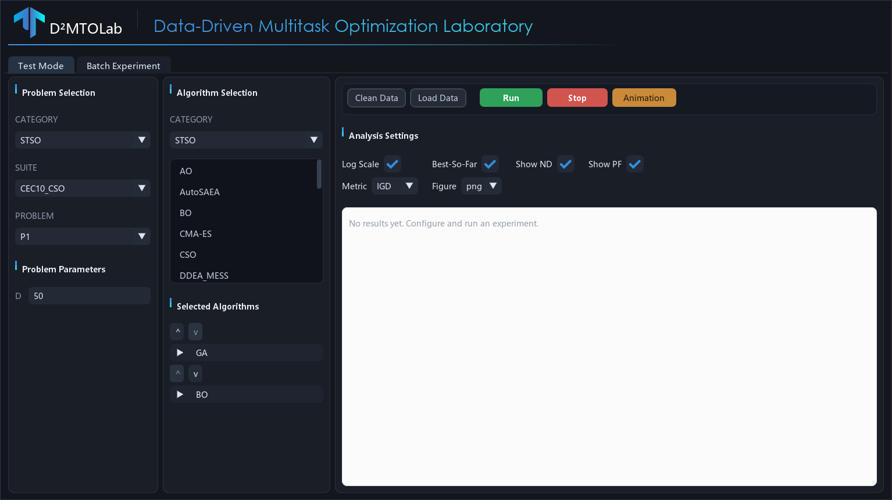
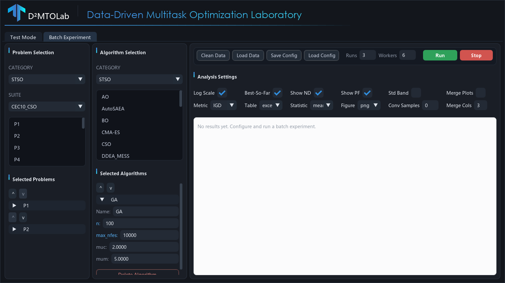
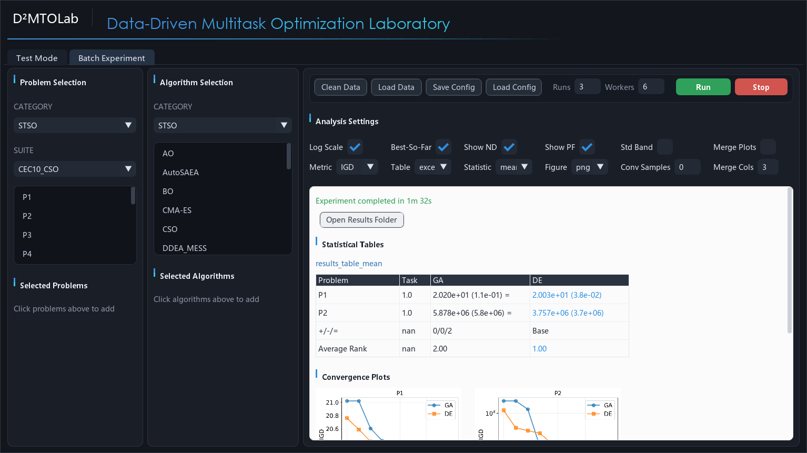

Desktop GUI
D²MTOLab ships an experimental desktop GUI built with DearPyGui. It exposes the full experiment workflow — choose problems and algorithms, configure parameters, run, and view analysis tables and figures — without writing any code.
The GUI lives in the ui/ directory of the repository. It is not part
of the PyPI package, so use a source checkout to run it.
{kind=link}

Installation
The GUI needs the core package plus a few UI-only dependencies:
# From a source checkout of the repository
git clone https://github.com/JiangtaoShen/DDMTOLab.git
cd DDMTOLab
pip install -e .
# UI dependencies (DearPyGui, Pillow, pandas, openpyxl)
pip install -r ui/requirements.txt
# Launch
python ui/main.py
Note
The GUI requires a graphical display. On a headless machine (e.g. a remote
server) run experiments through the Python API or
BatchExperiment instead.
Layout
The window opens on two tabs — Test Mode and Batch Experiment — that share the same three-column layout:
Problem Selection (left) — pick a category, suite, and problem, then set problem parameters (
D,M,K,Kp) where the suite allows them.Algorithm Selection (middle) — pick an algorithm category and click algorithms to add them. Each selected algorithm becomes a collapsible card where you can rename it, edit its parameters, and reorder or remove it.
Toolbar & Results (right) — run controls and analysis settings on top, a scrollable results panel (tables and figures) below.
The algorithm category follows the problem category automatically, and only algorithms compatible with the chosen problem are offered. Incompatible combinations (for example, a single-objective algorithm on a multiobjective problem, or an equal-dimension algorithm on unequal-dimension tasks) are reported before the run starts rather than failing midway.
Test Mode
Test Mode runs each selected algorithm once on a single problem and shows the per-run analysis: a results table, convergence curves, non-dominated solution plots (for multiobjective problems), and a runtime comparison.
Workflow
Select a problem category, suite, and problem on the left.
Adjust problem parameters if needed.
Select one or more algorithms in the middle column and edit their parameters.
Choose analysis options (metric, log scale, figure format, …).
Click Run.
Toolbar
Button |
Action |
|---|---|
Run |
Run the selected algorithms sequentially and generate analysis. |
Stop |
Interrupt the current run. |
Clean Data |
Clear the working |
Load Data |
Re-analyze a previously saved data folder without re-running. |
Animation |
Generate a convergence animation (GIF/MP4) from the last run’s data. |
Batch Experiment
Batch Experiment runs multiple algorithms on multiple problems for a configurable number of independent runs, using parallel worker processes, then produces statistical tables (mean/median with standard deviation and rank-sum significance markers) and aggregated plots.
{kind=link}

Workflow
Select a problem category and suite, then click problems to add them.
Select algorithms and edit their parameters.
Set Runs (independent repetitions) and Workers (parallel processes).
Configure analysis settings (metric, table format, statistic type, …).
Click Run.
Save / Load Config
The Save Config and Load Config buttons persist the full experiment
setup — selected problems and algorithms, their parameters, run settings, and
analysis options — to a YAML file. The saved file is compatible with
from_config(), so a
GUI-designed experiment can also be launched from a script.
Results
Both modes render results on a light panel: statistical tables (best values
highlighted), convergence plots, non-dominated fronts, and runtime bars. Use
Open Results Folder to open the output directory, or right-click a figure
to copy it or reveal it in the file browser. All outputs are also written to
the tests/Data and tests/Results folders next to the ui/ package.
{kind=link}
